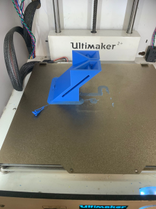

Final Project
Stage 6
Troubleshooting
Sand Flow & Leak
It was a good start that the sand flows as expected.
The above is my first encouter to leakage. Solution to it is to use superglue to glue the gaps as shown in the video below.
Testing is conducted again after the glue dries up but it seems that the sand does not flow as expected, being only going through the 3 mm hole dedicated for it. Moreover, there are still leaks. Solution is to still use the super glue to close all gaps and test again and again till there are no leaks which took me the whole day.
This is a heavy test where I overload the sand to test for leakage and if it will cause pressure to be too high that the sand does not flow. Conclusion is there are still leaks but the sand does flow.
The worst part comes after the last video I took on the heavy test because I am too busy troubleshooting the sand leakage and sand being stuck at the holes. Hence, I didn't take any more videos after that. This is because I made a bad decision of cleaning it with water and hand sanitizer to remove glue that is stuck at the holes. It is so bad to the point that I give up on that hourglass and redo a new one which is the one with the blue filter.

However, I gained experience and used the hot glue gun to glue the inner gaps between the acrylic and used lots of superglue and hot glue to glue the outer layer. Additionally, this time I have a better plan of the sequence of gluing acrylic as shown in the pictures below.

The result is good that there are no gaps based on my testing that will cause sand leakage and sand flow unexpectedly.